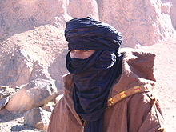
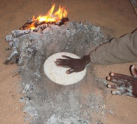
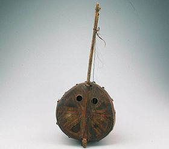
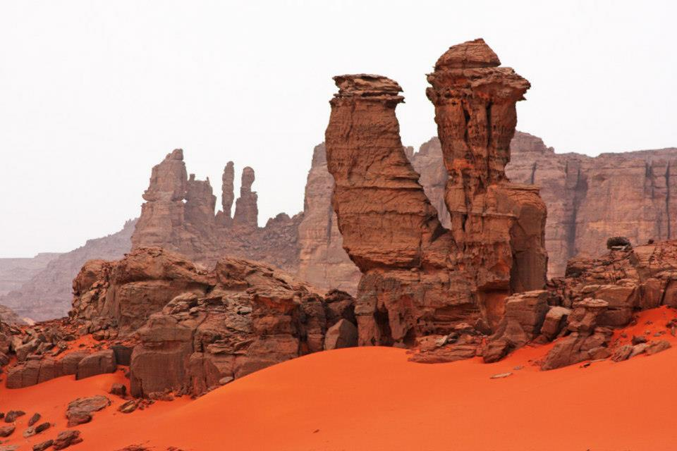
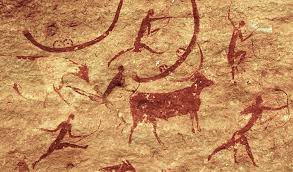

La Préhistoire de l'Algérie est connue par des vestiges datant de 1,8 Ma à 7 500 ans, parmi lesquels ceux du parc Tassili n'Ajjer, dans le sud-est de l'Algérie.
Pourquoi le Tassili N'Ajjer ?
Le Tassili n'Ajjer
en berbère : Tasili n Ajer, en tifinagh : ⵜⴰⵙⵉⵍⵉ ⵏ ⴰⵊⵊⵔ, est un massif montagneux situé au centre du Sahara, dans le Sud-Est de l'Algérie et débordant légèrement sur le territoire libyen. ce site est connu pour son art rupestre préhistorique et ses autres sites archéologiques antiques datant de l'époque néolithique, lorsque le climat local était plus proche de la savane que du désert.

Coutumes et traditions de la région
Les aspects distinctifs de la culture touareg comprennent les vêtements,
la nourriture, la langue, la religion, les arts, l'astronomie, l'architecture nomade, les armes traditionnelles,
la musique, les films, les jeux et les activités économiques Leur héritage
berbère est confirmée par l'usage de l'alphabet
tifinaghet la même base linguistique :
le tamasheq.
Vêtements
Dans la société touareg, les femmes ne portent pas traditionnellement le voile,
alors que les hommes si.
Les Touaregs portent souvent une sorte de long vêtement souvent nommé takakat
en étoffe de coton nommé bazinet un chèche, appelé aussi taguelmoust
tagelmust en berbère
ou aussi éghéwed et litham. Ce dernier est une sorte de turban d’environ quatre-cinq mètres de long enroulé autour de la tête pour se protéger du soleil, du vent, de la pluie, du sable, du froid… L’homme ne quitte normalement jamais son turban. Il peut être de différentes couleurs, telles que rouge, jaune, vert, mais deux couleurs ont une signification spéciale. Le blanc est porté pour montrer un signe de respect, un jour particulier. Le chèche indigo est fait à partir de lin, souvent avec un tissage complexe. Il est porté les jours de fête
et les jours de froid car il est plus chaud que le chèche en coton. Sa teinture tend à se déposer peu à peu sur la peau, ce qui explique que l'on donne parfois aux Touaregs le surnom d’
hommes bleus

Art
La plupart des œuvres d'art touareg sont des décorations en bijoux, en cuir et en métal appelés trik
et épées finement fabriquées. La communauté Inadan fait de l'artisanat traditionnel. Parmi leurs produits,
on trouve le tanaghilt ou le zakkat
la croix Agadez ou Croix d'Agadez; L'épée touareg
Takoba, de nombreux colliers en or et en argent appelés
Takazaet des boucles d'oreilles appelées
Tizabaten. Les boîtes de pèlerinage ont des décorations en fer et en laiton complexes et sont utilisées pour transporter des objets.
Cuisine
Le Taguella est un pain plat fabriqué à partir
de farine de blé et cuit sous feu de charbon, le pain plat en forme de disque est enterré sous le sable chaud.
Ensuite, le pain est cassé en petits morceaux et mangé mélangé à une sauce à la viande.
Le cérémonial du thé est une manière de montrer l’hospitalité et un prétexte pour discuter avec le visiteur de passage.
Le cérémonial du thé est une manière de montrer l’hospitalité et un prétexte pour discuter avec le visiteur de passage.

Musique
Une tradition de musique noble correspond aux classes dominantes
nobles ihaggaren et vassaux imyad: poésie et chant, avec accompagnement d'imzad, surtout lors des anciennes réunions galantes.

Des lieux magiques
On peut voir dans cette immense région de nombreuses peintures rupestres, datant d'environ
9 à 10 000 ans,
rappelant que le Sahara était à cette époque une contrée verdoyante et fertile.
Nombreux sont les dessins
représentant des troupeaux de bovins menés par des bergers. Il y a plusieurs
milliers d'années vivaient ici
des hommes qui ont laissé la trace de leurs préoccupations quotidiennes ;
on trouve en effet des scènes de chasse,
de danse et de prière, ainsi que de nombreux restes de poteries ou de pierres
taillées.Certaines peintures représenteraient
des créatures portant un casque sur la tête suggérant des « martiens ».
La majorité du milieu scientifique y voit
en fait des costumes et masques rituels.
Tadrart Rouge

La Tadrart se situe dans le sud du Parc National du Tassili N'Ajjer et elle
est l’un des paysages les plus féeriques du Sahara central.
Vous y découvrirez d’immenses canyons aux falaises sculptées et abruptes.
C’est une région où se mélangent roches de sable coloré aux reflets de jaune
au rouge et pitons rocheux aux formes les plus diverses.
La cité de Sefar et ses 15000 peintures reupestres

Certaines peintures remontent à 8 000 ans, la majorité a près de
5 000 ans. Elles montrent la vie quotidienne des habitants de la
région à une époque où le Sahara était encore boisé et traversé de nombreuses rivières.
On y voit des pasteurs menant leurs troupeaux, des chasseurs d'hippopotames...
Certaines peintures sont de véritables oeuvres d'art.
Un musé rupestre à ciel ouvert
Elle compte une trentaine d'espèces qui manifestent la présence d'une végétation
très abondante et de plans d'eau d'une certaine permanence.
Voici quelques espèces identifiées sur les gravures :
- l'Éléphant
96 exemplaires, dont l'un de 470 cm à la station XXV, pour les périodes bubaline et bovidienne, représentés selon six formules différentes
- le Rhinocéros
119 exemplaires à l'Oued Djerat, qui confirment l'humidité du Tassili à l'époque bubaline
- le Lion
une dizaine d'exemplaires pour la période bubaline, quelques exemplaires pour les périodes suivantes
- l'Autruche
figurée à toute époque selon des styles divers
- le Crocodile
4 exemplaires incomplets
- la Gazelle
peu représentée mais commune à l'époque
- l'Hippopotame
22 exemplaires
Un patrimoine mondial de l'UNESCO
Le parc culturel du Tassili
72 000 km2est inscrit depuis sur la liste du patrimoine mondial de l'UNESCO et classé réserve de biosphère depuis 1986. Des animaux en voie de disparition tels que le mouflon à manchettes et de nombreuses espèces de gazelles y ont trouvé refuge. Il est considéré, à ce jour, comme l'un des plus grands et anciens
musées rupestres à ciel ouvertdu monde, au même titre que les fresques des aborigènes d'Australie ou des khoïsan de Namibie.